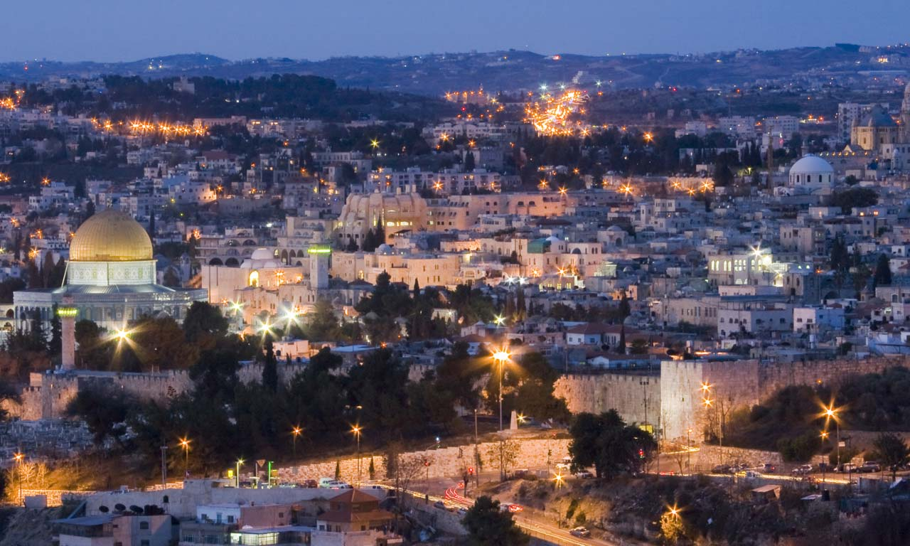

Jerusalem is the capital and the largest city in Israel in terms of population size.
As of 2021, there are about 958,000 residents living there.
Tel Aviv is the central city among the cities of Gush Dan and the second largest in its population in Israel.
Currently, Tel Aviv has 467,704 residents.

Haifa is the third largest city in Israel, with a mixed Jewish-Arab population.
As of 2021,ther are about 284,613 residents living in Haifa.

Rishon Letzion is the fourth largest city in Israel and has 256,090 residents as of 2021.
I'm living in Rishon Letzion.

Petah Tikva is a city in the Central District of Israel and the fifth most populous city in Israel with a population of 274,367.
Petah Tikva doesn't really exist.